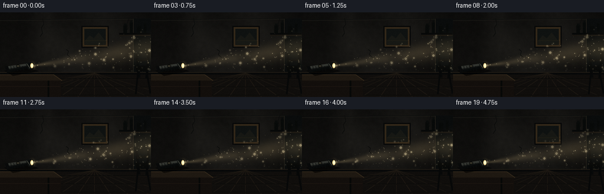
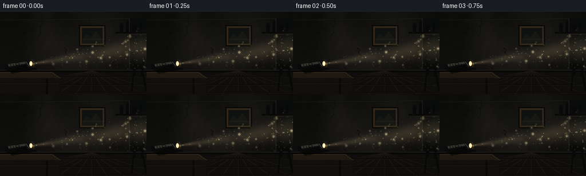
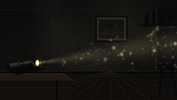

CODING AGENTS AS PIXEL WORLD MODELS
traex/GPT-5.6-Sol · phygen_052
点击播放 · 原生 RGB 像素
逐轮保存的候选
回放视频、检查图与代码变化。
每份候选均可单独播放。实际图片检查记录在下方工具轨迹中。
候选 01播放与检查图
点击播放 · 原生 RGB 像素


展开代码变化
--- 上一保存版本
+++ 本次保存版本
@@ -0,0 +1,221 @@
+from pathlib import Path
+import json
+import math
+import numpy as np
+from PIL import Image, ImageDraw, ImageFilter
+from scipy.ndimage import gaussian_filter
+import artifact_io
+
+ROOT = Path(__file__).resolve().parent
+SPEC = json.loads((ROOT / "task_spec.json").read_text())
+W, H, N = SPEC["width"], SPEC["height"], SPEC["frames"]
+S = 3
+WW, HH = W*S, H*S
+rng = np.random.default_rng(52031)
+
+def sc(v):
+ return int(round(v*S))
+
+def poly(draw, points, **kwargs):
+ draw.polygon([(sc(x), sc(y)) for x,y in points], **kwargs)
+
+def line(draw, points, **kwargs):
+ if "width" in kwargs: kwargs["width"] = sc(kwargs["width"])
+ draw.line([(sc(x), sc(y)) for x,y in points], **kwargs)
+
+def rect(draw, box, **kwargs):
+ draw.rectangle(tuple(sc(x) for x in box), **kwargs)
+
+def ellipse(draw, box, **kwargs):
+ draw.ellipse(tuple(sc(x) for x in box), **kwargs)
+
+# ----- Painted, low-key room -----
+yy, xx = np.mgrid[0:HH, 0:WW]
+x = xx / S; y = yy / S
+fine = gaussian_filter(rng.normal(size=(HH,WW)), 2.0*S)
+fine = fine / (fine.std()+1e-8)
+coarse = gaussian_filter(rng.normal(size=(HH,WW)), 16*S)
+coarse = coarse / (coarse.std()+1e-8)
+wall = np.zeros((HH,WW,3), np.float32)
+# old umber-gray plaster, darker at ceiling and edges
+vignette = 1.0 - 0.30*((x-W/2)/(W/2))**2 - 0.12*((y-70)/75)**2
+base_lum = 20.0 + 2.5*coarse + 0.65*fine
+wall[...,0] = base_lum*1.05*vignette
+wall[...,1] = base_lum*1.01*vignette
+wall[...,2] = base_lum*0.91*vignette
+wall = np.clip(wall,0,255).astype(np.uint8)
+bg = Image.fromarray(wall, "RGB")
+d = ImageDraw.Draw(bg)
+
+# Ceiling seam and aged plaster cracks
+line(d, [(0,13),(256,10)], fill=(11,13,13), width=1)
+line(d, [(0,14),(256,11)], fill=(31,29,24), width=1)
+for pts in [
+ [(72,10),(74,20),(70,26),(72,35),(68,41)],
+ [(218,11),(215,20),(217,27),(212,33)],
+ [(112,63),(116,66),(114,72),(120,77)],
+]:
+ line(d, pts, fill=(11,12,11), width=1)
+
+# Right corner / recess
+rect(d, (226,11,256,105), fill=(10,12,12))
+line(d, [(226,11),(226,105)], fill=(34,31,25), width=1)
+# old framed picture in the darkness
+rect(d, (138,23,184,60), fill=(7,8,8))
+rect(d, (140,25,182,58), fill=(50,39,25))
+rect(d, (143,28,179,55), fill=(15,18,17))
+# indistinct landscape inside frame
+poly(d, [(144,48),(152,39),(159,44),(167,34),(178,48),(178,54),(144,54)], fill=(23,24,20))
+line(d, [(144,48),(178,48)], fill=(31,29,21), width=1)
+
+# high shelf and dim bottle silhouettes
+rect(d, (202,35,255,38), fill=(7,8,8))
+rect(d, (202,38,255,40), fill=(25,22,17))
+for bx,bw,bh in [(209,6,13),(220,5,18),(232,7,12),(244,4,16)]:
+ rect(d,(bx,35-bh,bx+bw,35),fill=(8,10,9))
+ rect(d,(bx+1,32-bh,bx+bw-1,35-bh),fill=(10,12,11))
+
+# baseboard and floor
+rect(d, (0,102,256,106), fill=(8,9,9))
+line(d, [(0,102),(256,102)], fill=(37,31,23), width=1)
+poly(d, [(0,106),(256,106),(256,144),(0,144)], fill=(16,14,12))
+# subtle floor illumination gradient painted in later by beam; planks converge
+for x0 in [-55,-10,31,68,101,132,160,187,217,252,294]:
+ line(d, [(160,103),(x0,144)], fill=(29,24,18), width=1)
+for fy in [113,127,141]:
+ line(d, [(0,fy),(256,fy)], fill=(8,9,8), width=1)
+ line(d, [(0,fy+1),(256,fy+1)], fill=(23,19,15), width=1)
+
+# A half-seen chair at far right, grounding the room
+line(d, [(231,70),(236,111)], fill=(8,9,9), width=4)
+line(d, [(252,68),(248,112)], fill=(7,8,8), width=4)
+line(d, [(232,82),(251,80)], fill=(13,13,11), width=4)
+poly(d, [(228,91),(254,90),(250,100),(232,101)], fill=(8,9,8))
+line(d, [(234,99),(230,139)], fill=(7,8,8), width=3)
+line(d, [(248,98),(255,138)], fill=(7,8,8), width=3)
+
+# Table/crate in foreground, flashlight will rest here
+poly(d, [(0,106),(91,106),(105,116),(0,116)], fill=(31,25,18))
+line(d, [(0,106),(91,106),(105,116)], fill=(54,42,27), width=1)
+rect(d, (0,116,103,144), fill=(19,15,12))
+line(d, [(82,116),(82,144)], fill=(7,8,7), width=3)
+line(d, [(0,126),(102,126)], fill=(29,22,16), width=1)
+
+base = np.asarray(bg).astype(np.float32)
+# Reusable stationary fog-density field (broad swirls)
+fog0 = gaussian_filter(rng.normal(size=(HH,WW)), 8*S)
+fog0 = (fog0-fog0.mean())/(fog0.std()+1e-8)
+# Fixed dust particle population in room coordinates
+P = 360
+px0 = rng.uniform(46, 267, P)
+py0 = rng.uniform(5, 113, P)
+pvx = rng.normal(0.025, 0.055, P)
+pvy = rng.normal(-0.095, 0.045, P)
+pphase = rng.uniform(0, 2*np.pi, P)
+psize = rng.choice([0.28,0.38,0.52,0.68,0.9,1.2,1.65], P,
+ p=[.13,.20,.23,.20,.13,.08,.03])
+pdepth = rng.uniform(0.55,1.15,P)
+
+# Source and beam geometry
+sx, sy = 53.0, 91.0
+slope = -0.145
+
+frames=[]
+for fi in range(N):
+ t = fi / float(SPEC["fps"])
+ # minute lamp fluctuation and haze drift; source remains physically stationary
+ flicker = 0.985 + 0.012*math.sin(2*math.pi*t*1.17) + 0.007*math.sin(2*math.pi*t*2.31+0.8)
+ yaxis = sy + slope*(x-sx)
+ dx = x-sx
+ width = 1.8 + 0.205*np.maximum(dx,0)
+ rr = np.abs(y-yaxis)/(width+1e-4)
+ inside = (dx >= 0) & (rr < 1)
+ # soft but readable cone edge and brighter optical core
+ edge = np.clip(1-rr,0,1)
+ edge = edge*edge*(3-2*edge)
+ core = np.exp(-2.7*rr*rr)
+ axial = np.clip(1.03 - 0.00175*np.maximum(dx,0), .58, 1.03)
+ moving_wisp = 0.5 + 0.5*np.sin((x*0.048 + y*0.072) + t*0.45 + 0.32*fog0)
+ density = np.clip(0.89 + 0.12*fog0 + 0.08*moving_wisp, 0.60,1.22)
+ alpha = inside * (0.045*edge + 0.125*core*edge) * axial * density * flicker
+ # slightly stronger, misty halo at far wall where beam arrives
+ farspot = np.exp(-((x-247)/24)**2 - ((y-(sy+slope*(247-sx)))/35)**2)
+ alpha += inside * farspot * 0.035*edge
+ light = np.array([245.,213.,150.], np.float32)
+ arr = base*(1-alpha[...,None]) + light*alpha[...,None]
+ # clean narrow central shaft enhances directionality
+ shaft = inside*np.exp(-10.5*rr*rr)*np.clip(dx/75,0,1)*0.027
+ arr += shaft[...,None]*np.array([115,92,53],np.float32)
+ arr = np.clip(arr,0,255).astype(np.uint8)
+ im = Image.fromarray(arr, "RGB")
+
+ # Animated dust: only lights up while within the conical ray.
+ halos = Image.new("RGBA", (WW,HH), (0,0,0,0))
+ hd = ImageDraw.Draw(halos)
+ sharp = Image.new("RGBA", (WW,HH), (0,0,0,0))
+ sd = ImageDraw.Draw(sharp)
+ for i in range(P):
+ # rising convection + slow sideways oscillation; wrap through room volume
+ qx = 46 + ((px0[i]-46 + pvx[i]*fi*S + 1.2*math.sin(0.22*t+pphase[i])) % 221)
+ qy = 4 + ((py0[i]-4 + pvy[i]*fi*S + .6*math.sin(.55*t+pphase[i]*.7)) % 109)
+ qaxis = sy + slope*(qx-sx)
+ qwidth = 1.8 + .205*max(qx-sx,0)
+ qr = abs(qy-qaxis)/(qwidth+1e-5)
+ if qx < sx or qr >= .98:
+ continue
+ prof = (1-qr)**0.55
+ twinkle = .72 + .28*math.sin(1.7*t+pphase[i])**2
+ br = prof*twinkle*pdepth[i]*flicker
+ if br < .11: continue
+ rad = psize[i]*S
+ cx,cy = qx*S,qy*S
+ # soft halo and a tiny warm core; nearest motes become bokeh discs
+ ha = int(np.clip(48*br,6,70))
+ hd.ellipse((cx-rad*2.4,cy-rad*2.4,cx+rad*2.4,cy+rad*2.4), fill=(255,226,163,ha))
+ ca = int(np.clip(205*br,25,235))
+ if psize[i] > 1.1:
+ sd.ellipse((cx-rad,cy-rad,cx+rad,cy+rad), fill=(255,232,176,ca//2), outline=(255,242,204,ca))
+ else:
+ sd.ellipse((cx-rad*.55,cy-rad*.55,cx+rad*.55,cy+rad*.55), fill=(255,239,193,ca))
+ halos = halos.filter(ImageFilter.GaussianBlur(sc(.85)))
+ im = Image.alpha_composite(im.convert("RGBA"), halos)
+ im = Image.alpha_composite(im, sharp)
+
+ # Foreground flashlight: heavy dark cylinder aligned exactly with the beam.
+ fg = Image.new("RGBA", (WW,HH), (0,0,0,0)); fd=ImageDraw.Draw(fg)
+ # soft contact shadow
+ poly(fd, [(7,99),(48,94),(66,100),(22,108)], fill=(0,0,0,150))
+ # barrel and grip ridges
+ poly(fd, [(10,92),(45,87),(52,94),(15,102)], fill=(18,20,19,255))
+ poly(fd, [(10,92),(45,87),(47,90),(13,96)], fill=(50,52,47,255))
+ poly(fd, [(15,98),(50,91),(52,94),(15,102)], fill=(7,9,9,255))
+ for bx in [18,23,28,33,38]:
+ line(fd, [(bx,91.2),(bx+2,99.2)], fill=(9,11,11,220), width=1)
+ # tail cap and small switch
+ poly(fd, [(8,92),(13,91),(17,101),(12,103)], fill=(9,10,10,255))
+ ellipse(fd,(27,89.1,34,93.2),fill=(58,55,43,255),outline=(9,10,9,255),width=sc(1))
+ # widening bezel
+ poly(fd, [(43,85.8),(53,84.4),(57,96),(48,97.2)], fill=(13,15,14,255))
+ line(fd, [(45,87),(51,95)], fill=(67,68,59,255), width=1)
+ # lens seen obliquely at source: rim, glow, hot center
+ ellipse(fd,(50.1,84.8,57.3,96.1),fill=(71,63,43,255),outline=(9,11,10,255),width=sc(1))
+ ellipse(fd,(51.5,86.2,56.7,94.8),fill=(244,211,137,245))
+ ellipse(fd,(52.4,87.4,56.1,93.4),fill=(255,248,206,255))
+ # restrained bloom around exposed lens
+ bloom=Image.new("RGBA",(WW,HH),(0,0,0,0)); bd=ImageDraw.Draw(bloom)
+ ellipse(bd,(49,83,60,98),fill=(255,220,150,74))
+ bloom=bloom.filter(ImageFilter.GaussianBlur(sc(3.0)))
+ im=Image.alpha_composite(im,bloom)
+ im=Image.alpha_composite(im,fg)
+
+ # Very subtle sensor grain prevents sterile gradients without changing composition.
+ out=np.asarray(im.convert("RGB").resize((W,H),Image.Resampling.LANCZOS)).astype(np.int16)
+ grng=np.random.default_rng(9000+fi)
+ grain=grng.normal(0,.55,(H,W,1))
+ out=np.clip(out+grain,0,255).astype(np.uint8)
+ frames.append(out)
+
+frames=np.stack(frames,axis=0)
+assert frames.shape==(N,H,W,3) and frames.dtype==np.uint8
+artifact_io.save(frames,ROOT)
+print(f"saved {frames.shape} RGB frames to {ROOT}")
可观测工具轨迹
实际执行的命令与返回图片。
命令 1exit 0
/bin/bash -lc "ls -la && printf '\\n--- prompt.txt ---\\n' && cat prompt.txt && printf '\\n--- GENERATION_RULES.md ---\\n' && cat GENERATION_RULES.md && printf '\\n--- task_spec.json ---\\n' && cat task_spec.json"
命令 2exit 0
/bin/bash -lc "find . -maxdepth 2 -type f -printf '%p\\n' | sort"
命令 3exit 0
/bin/bash -lc "sed -n '1,240p' artifact_io.py && python - <<'PY'
try:
import PIL; print('PIL',PIL.__version__)
except Exception as e: print(e)
try:
import scipy; print('scipy',scipy.__version__)
except Exception as e: print(e)
PY"命令 4exit 0
/bin/bash -lc "cat > generate.py <<'PY'
from pathlib import Path
import json
import math
import numpy as np
from PIL import Image, ImageDraw, ImageFilter
from scipy.ndimage import gaussian_filter
import artifact_io
ROOT = Path(__file__).resolve().parent
SPEC = json.loads((ROOT / \"task_spec.json\").read_text())
W, H, N = SPEC[\"width\"], SPEC[\"height\"], SPEC[\"frames\"]
S = 3
WW, HH = W*S, H*S
rng = np.random.default_rng(52031)
def sc(v):
return int(round(v*S))
def poly(draw, points, **kwargs):
draw.polygon([(sc(x), sc(y)) for x,y in points], **kwargs)
def line(draw, points, **kwargs):
if \"width\" in kwargs: kwargs[\"width\"] = sc(kwargs[\"width\"])
draw.line([(sc(x), sc(y)) for x,y in points], **kwargs)
def rect(draw, box, **kwargs):
draw.rectangle(tuple(sc(x) for x in box), **kwargs)
def ellipse(draw, box, **kwargs):
draw.ellipse(tuple(sc(x) for x in box), **kwargs)
# ----- Painted, low-key room -----
yy, xx = np.mgrid[0:HH, 0:WW]
x = xx / S; y = yy / S
fine = gaussian_filter(rng.normal(size=(HH,WW)), 2.0*S)
fine = fine / (fine.std()+1e-8)
coarse = gaussian_filter(rng.normal(size=(HH,WW)), 16*S)
coarse = coarse / (coarse.std()+1e-8)
wall = np.zeros((HH,WW,3), np.float32)
# old umber-gray plaster, darker at ceiling and edges
vignette = 1.0 - 0.30*((x-W/2)/(W/2))**2 - 0.12*((y-70)/75)**2
base_lum = 20.0 + 2.5*coarse + 0.65*fine
wall[...,0] = base_lum*1.05*vignette
wall[...,1] = base_lum*1.01*vignette
wall[...,2] = base_lum*0.91*vignette
wall = np.clip(wall,0,255).astype(np.uint8)
bg = Image.fromarray(wall, \"RGB\")
d = ImageDraw.Draw(bg)
# Ceiling seam and aged plaster cracks
line(d, [(0,13),(256,10)], fill=(11,13,13), width=1)
line(d, [(0,14),(256,11)], fill=(31,29,24), width=1)
for pts in [
[(72,10),(74,20),(70,26),(72,35),(68,41)],
[(218,11),(215,20),(217,27),(212,33)],
[(112,63),(116,66),(114,72),(120,77)],
]:
line(d, pts, fill=(11,12,11), width=1)
# Right corner / recess
rect(d, (226,11,256,105), fill=(10,12,12))
line(d, [(226,11),(226,105)], fill=(34,31,25), width=1)
# old framed picture in the darkness
rect(d, (138,23,184,60), fill=(7,8,8))
rect(d, (140,25,182,58), fill=(50,39,25))
rect(d, (143,28,179,55), fill=(15,18,17))
# indistinct landscape inside frame
poly(d, [(144,48),(152,39),(159,44),(167,34),(178,48),(178,54),(144,54)], fill=(23,24,20))
line(d, [(144,48),(178,48)], fill=(31,29,21), width=1)
# high shelf and dim bottle silhouettes
rect(d, (202,35,255,38), fill=(7,8,8))
rect(d, (202,38,255,40), fill=(25,22,17))
for bx,bw,bh in [(209,6,13),(220,5,18),(232,7,12),(244,4,16)]:
rect(d,(bx,35-bh,bx+bw,35),fill=(8,10,9))
rect(d,(bx+1,32-bh,bx+bw-1,35-bh),fill=(10,12,11))
# baseboard and floor
rect(d, (0,102,256,106), fill=(8,9,9))
line(d, [(0,102),(256,102)], fill=(37,31,23), width=1)
poly(d, [(0,106),(256,106),(256,144),(0,144)], fill=(16,14,12))
# subtle floor illumination gradient painted in later by beam; planks converge
for x0 in [-55,-10,31,68,101,132,160,187,217,252,294]:
line(d, [(160,103),(x0,144)], fill=(29,24,18), width=1)
for fy in [113,127,141]:
line(d, [(0,fy),(256,fy)], fill=(8,9,8), width=1)
line(d, [(0,fy+1),(256,fy+1)], fill=(23,19,15), width=1)
# A half-seen chair at far right, grounding the room
line(d, [(231,70),(236,111)], fill=(8,9,9), width=4)
line(d, [(252,68),(248,112)], fill=(7,8,8), width=4)
line(d, [(232,82),(251,80)], fill=(13,13,11), width=4)
poly(d, [(228,91),(254,90),(250,100),(232,101)], fill=(8,9,8))
line(d, [(234,99),(230,139)], fill=(7,8,8), width=3)
line(d, [(248,98),(255,138)], fill=(7,8,8), width=3)
# Table/crate in foreground, flashlight will rest here
poly(d, [(0,106),(91,106),(105,116),(0,116)], fill=(31,25,18))
line(d, [(0,106),(91,106),(105,116)], fill=(54,42,27), width=1)
rect(d, (0,116,103,144), fill=(19,15,12))
line(d, [(82,116),(82,144)], fill=(7,8,7), width=3)
line(d, [(0,126),(102,126)], fill=(29,22,16), width=1)
base = np.asarray(bg).astype(np.float32)
# Reusable stationary fog-density field (broad swirls)
fog0 = gaussian_filter(rng.normal(size=(HH,WW)), 8*S)
fog0 = (fog0-fog0.mean())/(fog0.std()+1e-8)
# Fixed dust particle population in room coordinates
P = 360
px0 = rng.uniform(46, 267, P)
py0 = rng.uniform(5, 113, P)
pvx = rng.normal(0.025, 0.055, P)
pvy = rng.normal(-0.095, 0.045, P)
pphase = rng.uniform(0, 2*np.pi, P)
psize = rng.choice([0.28,0.38,0.52,0.68,0.9,1.2,1.65], P,
p=[.13,.20,.23,.20,.13,.08,.03])
pdepth = rng.uniform(0.55,1.15,P)
# Source and beam geometry
sx, sy = 53.0, 91.0
slope = -0.145
frames=[]
for fi in range(N):
t = fi / float(SPEC[\"fps\"])
# minute lamp fluctuation and haze drift; source remains physically stationary
flicker = 0.985 + 0.012*math.sin(2*math.pi*t*1.17) + 0.007*math.sin(2*math.pi*t*2.31+0.8)
yaxis = sy + slope*(x-sx)
dx = x-sx
width = 1.8 + 0.205*np.maximum(dx,0)
rr = np.abs(y-yaxis)/(width+1e-4)
inside = (dx >= 0) & (rr < 1)
# soft but readable cone edge and brighter optical core
edge = np.clip(1-rr,0,1)
edge = edge*edge*(3-2*edge)
core = np.exp(-2.7*rr*rr)
axial = np.clip(1.03 - 0.00175*np.maximum(dx,0), .58, 1.03)
moving_wisp = 0.5 + 0.5*np.sin((x*0.048 + y*0.072) + t*0.45 + 0.32*fog0)
density = np.clip(0.89 + 0.12*fog0 + 0.08*moving_wisp, 0.60,1.22)
alpha = inside * (0.045*edge + 0.125*core*edge) * axial * density * flicker
# slightly stronger, misty halo at far wall where beam arrives
farspot = np.exp(-((x-247)/24)**2 - ((y-(sy+slope*(247-sx)))/35)**2)
alpha += inside * farspot * 0.035*edge
light = np.array([245.,213.,150.], np.float32)
arr = base*(1-alpha[...,None]) + light*alpha[...,None]
# clean narrow central shaft enhances directionality
shaft = inside*np.exp(-10.5*rr*rr)*np.clip(dx/75,0,1)*0.027
arr += shaft[...,None]*np.array([115,92,53],np.float32)
arr = np.clip(arr,0,255).astype(np.uint8)
im = Image.fromarray(arr, \"RGB\")
# Animated dust: only lights up while within the conical ray.
halos = Image.new(\"RGBA\", (WW,HH), (0,0,0,0))
hd = ImageDraw.Draw(halos)
sharp = Image.new(\"RGBA\", (WW,HH), (0,0,0,0))
sd = ImageDraw.Draw(sharp)
for i in range(P):
# rising convection + slow sideways oscillation; wrap through room volume
qx = 46 + ((px0[i]-46 + pvx[i]*fi*S + 1.2*math.sin(0.22*t+pphase[i])) % 221)
qy = 4 + ((py0[i]-4 + pvy[i]*fi*S + .6*math.sin(.55*t+pphase[i]*.7)) % 109)
qaxis = sy + slope*(qx-sx)
qwidth = 1.8 + .205*max(qx-sx,0)
qr = abs(qy-qaxis)/(qwidth+1e-5)
if qx < sx or qr >= .98:
continue
prof = (1-qr)**0.55
twinkle = .72 + .28*math.sin(1.7*t+pphase[i])**2
br = prof*twinkle*pdepth[i]*flicker
if br < .11: continue
rad = psize[i]*S
cx,cy = qx*S,qy*S
# soft halo and a tiny warm core; nearest motes become bokeh discs
ha = int(np.clip(48*br,6,70))
hd.ellipse((cx-rad*2.4,cy-rad*2.4,cx+rad*2.4,cy+rad*2.4), fill=(255,226,163,ha))
ca = int(np.clip(205*br,25,235))
if psize[i] > 1.1:
sd.ellipse((cx-rad,cy-rad,cx+rad,cy+rad), fill=(255,232,176,ca//2), outline=(255,242,204,ca))
else:
sd.ellipse((cx-rad*.55,cy-rad*.55,cx+rad*.55,cy+rad*.55), fill=(255,239,193,ca))
halos = halos.filter(ImageFilter.GaussianBlur(sc(.85)))
im = Image.alpha_composite(im.convert(\"RGBA\"), halos)
im = Image.alpha_composite(im, sharp)
# Foreground flashlight: heavy dark cylinder aligned exactly with the beam.
fg = Image.new(\"RGBA\", (WW,HH), (0,0,0,0)); fd=ImageDraw.Draw(fg)
# soft contact shadow
poly(fd, [(7,99),(48,94),(66,100),(22,108)], fill=(0,0,0,150))
# barrel and grip ridges
poly(fd, [(10,92),(45,87),(52,94),(15,102)], fill=(18,20,19,255))
poly(fd, [(10,92),(45,87),(47,90),(13,96)], fill=(50,52,47,255))
poly(fd, [(15,98),(50,91),(52,94),(15,102)], fill=(7,9,9,255))
for bx in [18,23,28,33,38]:
line(fd, [(bx,91.2),(bx+2,99.2)], fill=(9,11,11,220), width=1)
# tail cap and small switch
poly(fd, [(8,92),(13,91),(17,101),(12,103)], fill=(9,10,10,255))
ellipse(fd,(27,89.1,34,93.2),fill=(58,55,43,255),outline=(9,10,9,255),width=sc(1))
# widening bezel
poly(fd, [(43,85.8),(53,84.4),(57,96),(48,97.2)], fill=(13,15,14,255))
line(fd, [(45,87),(51,95)], fill=(67,68,59,255), width=1)
# lens seen obliquely at source: rim, glow, hot center
ellipse(fd,(50.1,84.8,57.3,96.1),fill=(71,63,43,255),outline=(9,11,10,255),width=sc(1))
ellipse(fd,(51.5,86.2,56.7,94.8),fill=(244,211,137,245))
ellipse(fd,(52.4,87.4,56.1,93.4),fill=(255,248,206,255))
# restrained bloom around exposed lens
bloom=Image.new(\"RGBA\",(WW,HH),(0,0,0,0)); bd=ImageDraw.Draw(bloom)
ellipse(bd,(49,83,60,98),fill=(255,220,150,74))
bloom=bloom.filter(ImageFilter.GaussianBlur(sc(3.0)))
im=Image.alpha_composite(im,bloom)
im=Image.alpha_composite(im,fg)
# Very subtle sensor grain prevents sterile gradients without changing composition.
out=np.asarray(im.convert(\"RGB\").resize((W,H),Image.Resampling.LANCZOS)).astype(np.int16)
grng=np.random.default_rng(9000+fi)
grain=grng.normal(0,.55,(H,W,1))
out=np.clip(out+grain,0,255).astype(np.uint8)
frames.append(out)
frames=np.stack(frames,axis=0)
assert frames.shape==(N,H,W,3) and frames.dtype==np.uint8
artifact_io.save(frames,ROOT)
print(f\"saved {frames.shape} RGB frames to {ROOT}\")
PY
python generate.py"命令 5exit 1
/bin/bash -lc 'python generate.py >/tmp/regen.log && tail -1 /tmp/regen.log'
命令 6exit 0
/bin/bash -lc "python - <<'PY'
import numpy as np
from PIL import Image
z=np.load('pixels.npz')['pixels']
ims=np.stack([np.asarray(Image.open(f'frames/{i:02d}.png').convert('RGB')) for i in range(20)])
print('pixels archive:',z.shape,z.dtype)
print('frames:',ims.shape,ims.dtype,ims.min(),ims.max())
d=np.abs(np.diff(ims.astype(np.int16),axis=0))
print('adjacent MAD min/mean/max:',d.mean((1,2,3)).min(),d.mean(),d.mean((1,2,3)).max())
print('changed-pixel ratio:',np.mean(np.any(d>2,axis=3)))
assert z.shape==(144,256,20)
assert ims.shape==(20,144,256,3) and ims.dtype==np.uint8
# Validate packed archive against image frames.
p=(ims[...,0].astype(np.uint32)<<16)|(ims[...,1].astype(np.uint32)<<8)|ims[...,2].astype(np.uint32)
assert np.array_equal(z,p.transpose(1,2,0))
print('archive/frame consistency: OK')
PY
ls -lh pixels.npz index.html inspection.png frames/00.png frames/19.png"命令 7exit 0
/bin/bash -lc "python generate.py > .tmp/regen.log 2>&1 && tail -3 .tmp/regen.log && python - <<'PY'
import numpy as np
z=np.load('pixels.npz')['pixels']
assert z.shape==(144,256,20) and z.dtype==np.uint32
print('final artifact validation: OK')
PY"视觉工具实际返回图片 1

视觉工具实际返回图片 2

保存候选 1 份；完成命令 7 次；可验证图片返回 2 张。原始 API 响应与完整日志保留在本地。